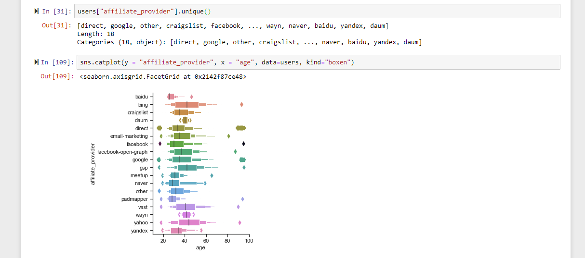

While the dataset is large, it does have problems where much of the data is probably unusable, as many features such as gender don't have answers for a lot of the entries. However, because the dataset is so big to begin with, there should be enough good entries to build a respectable machine learning model. We would also maybe want to convert some data types to make it more ML friendly, such as changing the dates into integer time stamps to save future pain.
I plotted age vs affiliate provider, as it would give AirBnB good insight into what it's users are using for affiliate providers in general, but also along specific age lines, in case AirBnB wanted to target a specific demographic in the future.
Since we are looking at facebook posts and there like/reaction counts, we will need to access that text and numeric data. Chances are that Facebook's API won't let us access them directly, so we will need to use scraping methods shown in class. Actually, we will probably want to use something like Selenium that lets us control an actual webpage with python, then we can scroll to the bottom of the account we are looking at it and be able to then access all of the MIT Confessions post with one request. From there we can use Beautiful Soup to extract all of the necessary info we need (post text, reactions, date posted, etc). Because it's just text, we should hopefully be able to store it locally as it is about 15,000 entires of just text fields.